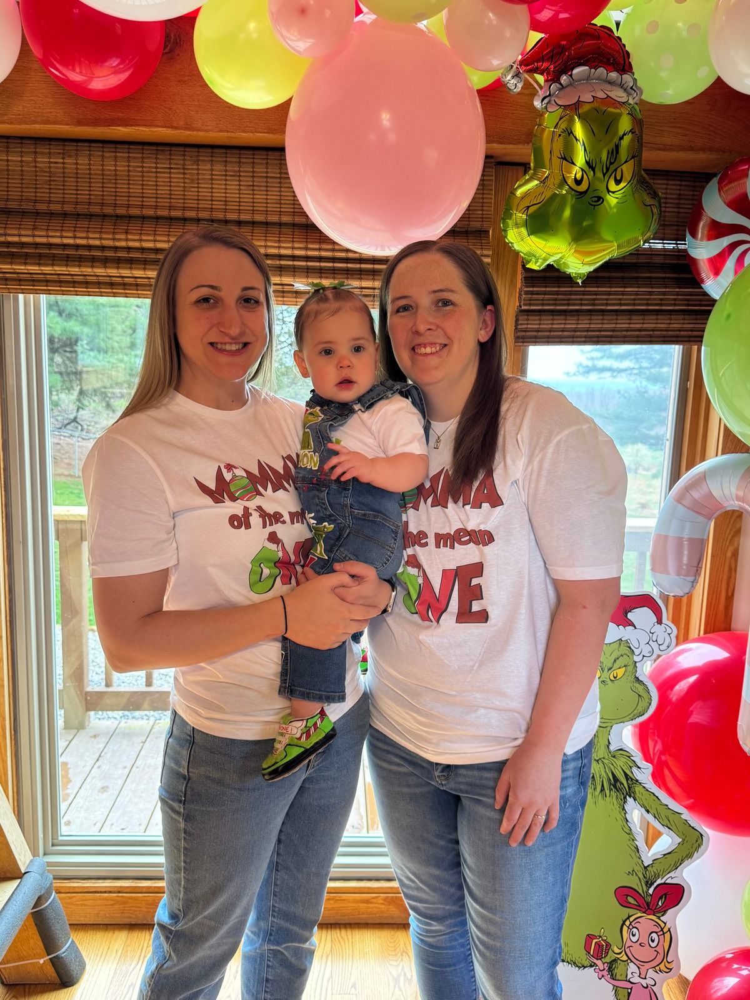
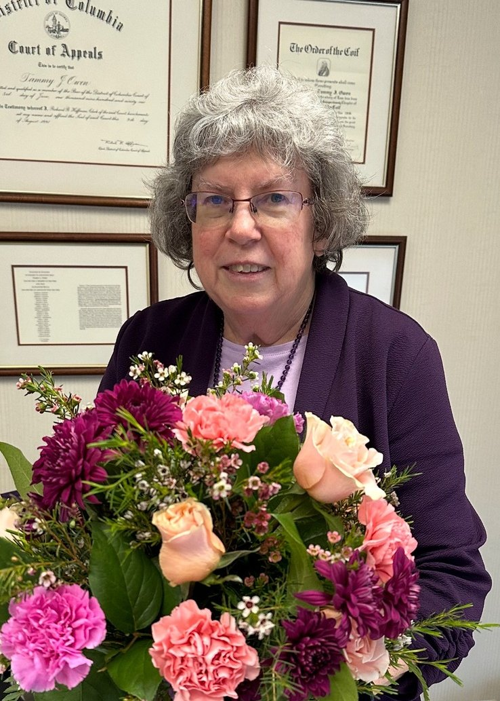

Our mission and the people making it happen
The WV T1D Adults group is dedicated to bringing together adults living with type 1 diabetes in and around the state of West Virginia to create a strong support system and meaningful connections. Our goal is to provide a welcoming space where members can share experiences, learn from one another, and find encouragement in the journey of living with T1D.
Through community-building activities, social events, and opportunities to simply have fun, we strive to make life with type 1 diabetes a little easier—and a lot more connected. Our events are proudly sponsored by Ties for Tim and Camp Kno-Koma, two organizations that share our commitment to supporting individuals and families affected by T1D.
Together, we're building not just a group, but a community.
Maddie has lived with type 1 diabetes since the age of seven. Growing up, she found connection and support through Camp Kno-Koma, where she has been a camper, counselor, volunteer, and now serves as President of the Board of Directors. She is currently a clinical pharmacist working in a medical weight management clinic in West Virginia. Outside of her professional and advocacy roles, Maddie enjoys music and concerts, spending time with her friends and family, reading, traveling, exploring pop culture, and cheering on WVU sports. She is passionate about creating spaces where adults with T1D can connect, support one another, and build lasting friendships.

Emmy has lived with type 1 diabetes for 22 years and brings her personal and professional experience to supporting others living with the condition. She is a wife, mom, nurse, Cardiometabolic Educator, and Certified Diabetes Care and Education Specialist (CDCES), dedicated to helping people navigate their health with confidence and compassion. Beyond her career and advocacy, Emmy enjoys a full and active life. She is a hunter and musician, and values the balance of spending time outdoors, expressing creativity through music, and being with her family. With a deep understanding of both the challenges and the strength that come with living with T1D, Emmy is passionate about building community, sharing knowledge, and encouraging others to live life fully.

Tammy is an attorney with Goodwin & Goodwin, LLP in Charleston, West Virginia, where she practices commercial law. Outside of her professional work, she dedicates much of her free time to supporting children, adults, and families impacted by type 1 diabetes across the state. A longtime volunteer with Breakthrough T1D and Camp Kno-Koma, Tammy's passion for advocacy grew when her son, Aaron, was diagnosed with type 1 diabetes at age 11. She is married to Ky Owen and has several surrogate children, who are fondly described in Ky's book, "None Call Me Dad." When she's not working or volunteering, Tammy enjoys being outdoors and spending time with her beloved dogs. Her dedication, both professionally and personally, reflects her commitment to community, family, and making a lasting difference for those living with T1D.